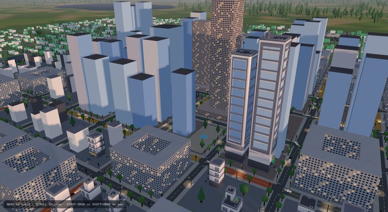
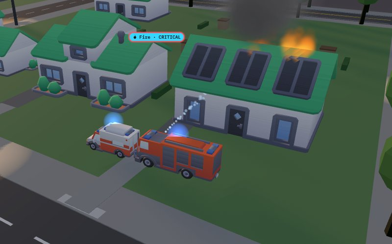
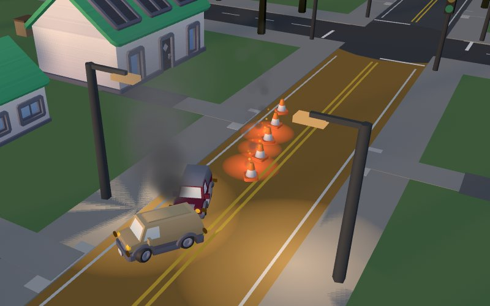

Quick review: pillar 1, Pathfinding and Navigation
A* runs on live travel times measured from the cars, so congestion, accidents and closures change routes as the city runs. Every trip goes door to door between real addresses, and calls go to the unit with the lowest ETA. New: cars already on the road look again every 20 s, and a car whose remaining route runs through a street at over three times its free-flow time switches if the new way saves 20 s and 20%. With the busiest arterial jammed at the peak, cars already heading for it arrived in 230 s instead of 330 s, and other trips were 0.5% slower. Unit ETAs (siren-aware) came in at a median 1.06 of the time actually taken (10th to 90th percentile 0.92–1.21, mean error 11 s, 40 trips).
Second pillar integration: Swarm and Boids
Cars on a unit's street pull onto the shoulder (separation), the unit passes, and they merge back (cohesion); junctions ahead are held. For the Beta the yielding covers the whole trip and feeds the game. On the same 16 unit trips at the peak, units took a mean 123 s with the siren on and 283 s with it off (0.44 of the time).
Leaving the station: cars approaching the driveway stop to let a unit out, on both lanes for a left turn out (about 1.4 s to get out in steady traffic; with the siren off it found no gap in 270 s).
Queues react: cars heading for an accident look for a way round every 10 s as its queue grows. Mean queue at the peak: 1.79 cars with neither rule, 1.01 with the queue rule, 0.71 with live rerouting as well.
Turning round in the street when a unit is sent back the way it came (16 s against 32 s); buses pull over for units like other cars; multi-unit calls put several units on one street.
In the game: each unit's card shows the cars that made way and junctions held, live and for its last run; the end screen totals them for the shift with the time saved. The saving reads low (about half the measured saving), so it never overstates.
New features since the Alpha (A4)
Calls (Ananya): multi-unit calls (crash: police and ambulance; fire: engine and ambulance), severity (low, medium, critical; critical calls expire at 0.6 of the usual time, score 1.5 times and go to the top of the list) and mutual aid from other stations. Tuned since: 20% of calls are critical (was a third), Tab follows the list order, and ambulances also take patients to hospital from crash calls and critical fires.
Models (Mihir): CC0 Kenney Car Kit vehicles with spinning, steering wheels and body pitch and roll; Kenney City Kit models for every building (houses, shops, apartment blocks, towers, warehouses, the mall and the stations, which carry a coloured roof plate), each fitted to its lot and facing its street. The Graphics button (G) switches everything back to the simple Alpha models.
Scenes (Mihir): accidents with Car Kit wrecks, debris, a cone taper, road flares and hazard lights; lane-closure arrow boards and barrier lamps. On a call, units park at the address with their lights going; a fire burns from the moment it is called in, and an engine on scene runs a hose and a water jet onto it; police tape goes round a crime scene.
Weather (W): rain and fog lower driving speed (to 0.88 and 0.78 of the limit) and lengthen headways (1.25 and 1.4 times), with an overcast sky, fog, falling rain and wet roads. Peak trips took 214 s clear, 226 s in rain, 237 s in fog, with no gridlock.
Buses: three lines along the arterials, turning through downtown, with stops and shelters; the Buses button (L) shows each line, its stops and every bus, with a button to follow one. City: kerbed pavements, a colour pass, trees that sway in the breeze, flocks of birds steered as boids, drifting clouds; traffic, horns, wind and birdsong you hear as the camera nears the streets (one button mutes all sound). Hospital trips with a 3-minute handover.
Game (Mihir): a first-shift tutorial that moves on as the player does each step; icons for the call kinds in the list, pins and alerts; default speed 5× (a 2-hour shift in 24 minutes).
Stability: 80 automated tests (63 in the Alpha) plus 7 report experiments; the gridlock guard removed no cars in any test at normal demand.
Performance
Target from A2: 60 FPS with a few hundred cars and up to about 50 units. A simulation step takes a mean 0.8 ms at the normal peak (720 vehicles with 24 units out) and 1.3 ms with 1,180 vehicles (no gridlock); at 2,100 vehicles the network saturates and the gridlock guard starts removing cars. At the default 5× (50 steps a second) the simulation needs under 70 ms per real second even at 1,180 vehicles. On a laptop with integrated AMD Radeon graphics (Chrome, 1600×900 window, frame rate uncapped) at the morning peak (about 600 vehicles, 5 to 6 units out), Graphics high held 60 FPS (the screen's limit) at the default 5× (lowest one-second reading 59) and at 20× (lowest 56), with every building drawn in full and 7–8 ms of each 16.7 ms frame spent drawing; uncapped, an earlier build with simpler distant buildings ran at a median 72. Two changes got there: cars far from the camera are drawn with the simple model, and each frame uploads only the vehicle slots in use (it had been re-sending all 4,000, which held Graphics high to about 45 FPS).
Experiments
Dispatch policy (2-hour auto-dispatched shifts, 3 call streams each): at 20 calls an hour, sending the unit with the lowest live ETA and sending the nearest unit gave the same result (116 of 122 calls resolved, none missed, mean response 78 s against 79 s). At 30 calls an hour, lowest-ETA missed 4 calls against 6, with a median response of 123 s against 133 s (means 179 s and 182 s). The difference is small because in a grid the nearest unit is usually also the fastest; ETA wins when a jam or accident lies between them. (A single call stream had suggested the opposite at 30 an hour, so we pool three.)
Coverage at the peak: every junction is within 4 minutes of some station's units (median 105 s); for a given kind, 92–93% are within 4 minutes and all within 8. Experiments run with EXPERIMENTS=1 npx vitest run test/experiments.test.ts; results in docs/A5_EXPERIMENTS.json.
Weekly schedule to the final
Week
Engineering
Assets
Milestone
Owner
W10–W11 (Nov 2 – 15), done
Hospital trips, turn-round, cars letting units out, rerouting round accident queues, yield stats per trip, buses, multi-unit calls, severity, mutual aid
Car Kit vehicles; animated incidents; bus model; colour pass
Merge 1 Nov 15
Mihir: sim, models; Ananya: call rules
W12 (Nov 16 – 22), done early
Live rerouting; weather; yield stats in the game; tutorial; bus overlay; experiments
City Kit buildings; on-scene scenes; icons
Beta submitted Nov 23
Mihir
W13 (Nov 23 – 29)
Thanksgiving, light week: play-test with classmates and retune; follow up the dispatch-policy result; night lighting for model buildings
Pedestrians, parked cars; ambient sound
Feature freeze Nov 29
Both
W14 (Nov 30 – Dec 6)
Could-have only if ahead: adaptive signals, two-lane arterials, snow
Video, report figures, final slides
Release candidate Dec 6
Both
W15 (Dec 7 – 13): buffer
No new features. Bug fixes, documentation, README, final report and video
Final submission
Both
Known issues
Not play-tested by other people yet; balance so far comes from automated shifts (at Normal's call rate, none of 122 calls missed over three 2-hour shifts).
Model buildings appear about 10 s after the city (they load in the background) and their windows do not light up at night; podium blocks become standalone towers. Accidents placed before the models load, or on Graphics low, use the simple models.
Turning round jumps: a unit turning in the street disappears for about a second. Cars do not pass a bus at a stop; they wait the 20 s.
Lane closures carry about 650–700 cars an hour, one side at a time. Smoke, rain and lights run on real time, so they keep moving while paused.
Yield savings read low (about half the measured saving): the estimate does not count waits at junctions and driveways.
Frame rates are from one laptop and headless Chrome; with the screen's refresh limit a browser shows at most 60.
Screenshots

City Kit houses and towers at the morning peak.

A fire call: engine and ambulance on scene, water on the fire.

An accident: wrecks, debris, cone taper and flares; cars pass in the other lane.